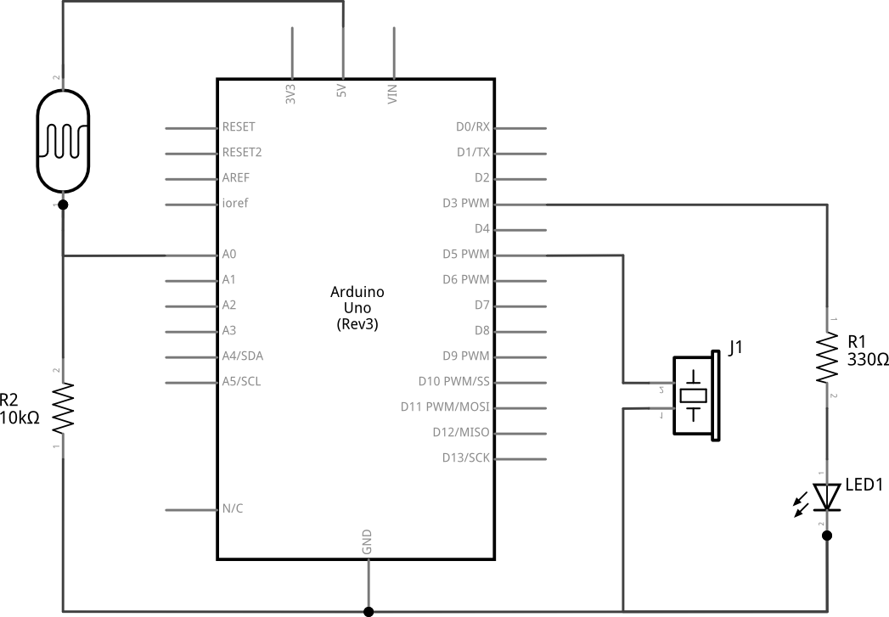
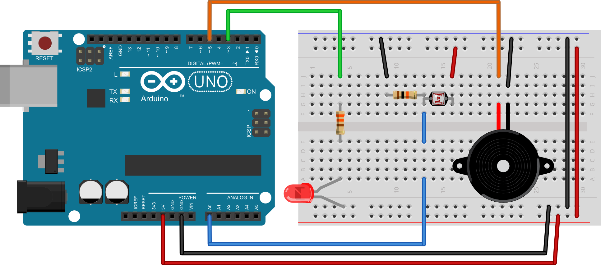

Poglavlje 9 · Završni projekti · Zadatak 46
46. Svjetlosni instrument
Na mikrokontroler spojite jadan fotootpornik, jednu zujalicu i jednu svjetleću diodu. Napišite program koji će omogućiti da smanjivanjem svjetlosti (koju zaklanjamo rukom) možemo svirati električni klavir sa osam tonova. Kada je fotootpornik skroz osvijetljen zujalica ne proizvodi nikakve tonove (ruka svirača ne zaklanja svjetlost). Kada je fotootpornik potpuno neosvijetljen (ruka svirača je vrlo blizu fotootpornika) na zujalici se generira ton C6. Kako svirač odmiče ruku tako je fotootpornik sve osvjetljeniji pa se frekvencija tona smanjuje prema tonu C5. Napišite program koji će, kada se pokrene mikrokontroler, očitati minimalnu i maksimalnu količinu svjetlosti te će njih iskoristiti za određivanje granica svjetlosti između pojedinih tonova. Kada se pokrene mikrokontroler uključuje se svjetleća dioda. To je znak da mikrokontroler mjeri maksimalnu količinu svjetlosti. Taj proces traje dvije sekunde tijekom kojih svirač ne smije zaklanjati svjetlost na fotootporniku. Nakon toga svjetleća dioda se isključuje. To je znak da mikrokontroler mjeri minimalnu količinu svjetlosti. Taj proces traje dvije sekunde tijekom kojih svirač mora približiti ruku vrlo blizu fotootporniku. Nakon završetka kalibracije svjetleća dioda se uključuje i na zujalici se čuje ton frekvencije 5000 Hz trajanja pola sekunde i svirač može započeti sa sviranjem. U program dogradite slanje serijskih podataka na računalo kako biste lakše pratili rad mikrokontrolera tijekom kalibracije i sviranja.
Ton |
C5 |
D5 |
E5 |
F5 |
G5 |
A5 |
B5 |
C6 |
Frekvencija |
523 |
587 |
659 |
698 |
784 |
880 |
988 |
1046 |
Shema spajanja

Eksperimentalna pločica
Rješenje
int led = 3; //definiraj led = 3 int fo = A0; //definiraj pot = A0 int zuj = 5; //definiraj zuj = 5 int ocitanjefo; //definiraj varijablu ocitanjepot int minimum = 1023; //definiraj varijablu minimum int maksimum = 0; //definiraj varijablu maksimum int brojac; //definiraj varijablu brojac int interval; //definiraj varijablu interval int c5, d5, e5, f5, g5, a5, b5, c6, ti; //granice tonova void setup() { pinMode(led, OUTPUT); //postavi izvod led kao izlazni pinMode(zuj, OUTPUT); //postavi izvod zuj kao izlazni digitalWrite(led, LOW); //isključi LED diodu - početno stanje Serial.begin(9600); //inicijalizaija serijske veze digitalWrite(led, HIGH); //početak kalibracije - maksimum Serial.println("TRAZIM MAKSIMUM"); //pošalji poruku serijskim putem for (brojac=0; brojac<100; brojac++){ //ponovi 100 puta ocitanjefo=analogRead(fo); //očitaj stanje analognog ulaza if (ocitanjefo>maksimum){ //ako je očitanje veće od najvećeg maksimum=ocitanjefo; //pohrani očitanje kao najveće } delay(20); //čekaj 20 ms } Serial.println(maksimum); //pošalji maksimum serijskim putem digitalWrite(led, LOW); //početak kalibracije - minimum Serial.println("TRAZIM MINIMUM"); //pošalji poruku serijskim putem for (brojac=0; brojac<100; brojac++){ //ponovi 100 puta ocitanjefo=analogRead(fo); //očitaj stanje analognog ulaza if (ocitanjefo<minimum){ //ako je očitanje manje od najmanjeg minimum=ocitanjefo; //pohrani očitanje kao najmanje } delay(20); //čekaj 20 ms } Serial.println(minimum); //pošalji minimum serijskim putem interval=(maksimum-minimum)/8; //izračunaj interval između tonova c6=minimum; //izračun granične vrijenosti tona b5=minimum+interval; //izračun granične vrijenosti tona a5=minimum+2*interval; //izračun granične vrijenosti tona g5=minimum+3*interval; //izračun granične vrijenosti tona f5=minimum+4*interval; //izračun granične vrijenosti tona e5=minimum+5*interval; //izračun granične vrijenosti tona d5=minimum+6*interval; //izračun granične vrijenosti tona c5=minimum+7*interval; //izračun granične vrijenosti tona ti=minimum+8*interval; //izračun granične vrijenosti tona Serial.println("GRANICE TONOVA"); //pošalji poruku serijskim putem Serial.print("c5: "); //pošalji poruku serijskim putem Serial.println(c5); //pošalji poruku serijskim putem Serial.print("d5: "); //pošalji poruku serijskim putem Serial.println(d5); //pošalji poruku serijskim putem Serial.print("e5: "); //pošalji poruku serijskim putem Serial.println(e5); //pošalji poruku serijskim putem Serial.print("f5: "); //pošalji poruku serijskim putem Serial.println(f5); //pošalji poruku serijskim putem Serial.print("g5: "); //pošalji poruku serijskim putem Serial.println(g5); //pošalji poruku serijskim putem Serial.print("a5: "); //pošalji poruku serijskim putem Serial.println(a5); //pošalji poruku serijskim putem Serial.print("b5: "); //pošalji poruku serijskim putem Serial.println(b5); //pošalji poruku serijskim putem Serial.print("c6: "); //pošalji poruku serijskim putem Serial.println(c6); //pošalji poruku serijskim putem } void loop() { ocitanjefo=analogRead(fo); //očitaj stanje analognog ulaza if (ocitanjefo>=c6 && ocitanjefo<b5){ tone(zuj, 1046); //generiraj ton prema granicama ocitanja } else if (ocitanjefo>=b5 && ocitanjefo<a5){ tone(zuj, 988); //generiraj ton prema granicama ocitanja } else if (ocitanjefo>=a5 && ocitanjefo<g5){ tone(zuj, 880); //generiraj ton prema granicama ocitanja } else if (ocitanjefo>=g5 && ocitanjefo<f5){ tone(zuj, 784); //generiraj ton prema granicama ocitanja } else if (ocitanjefo>=f5 && ocitanjefo<e5){ tone(zuj, 698); //generiraj ton prema granicama ocitanja } else if (ocitanjefo>=e5 && ocitanjefo<d5){ tone(zuj, 659); //generiraj ton prema granicama ocitanja } else if (ocitanjefo>=d5 && ocitanjefo<c5){ tone(zuj, 587); //generiraj ton prema granicama ocitanja } else if (ocitanjefo>=c5 && ocitanjefo<ti){ tone(zuj, 523); //generiraj ton prema granicama ocitanja } else { noTone(zuj); //isključi generiranje tona } }